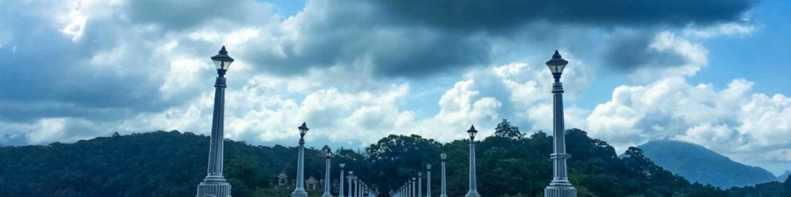
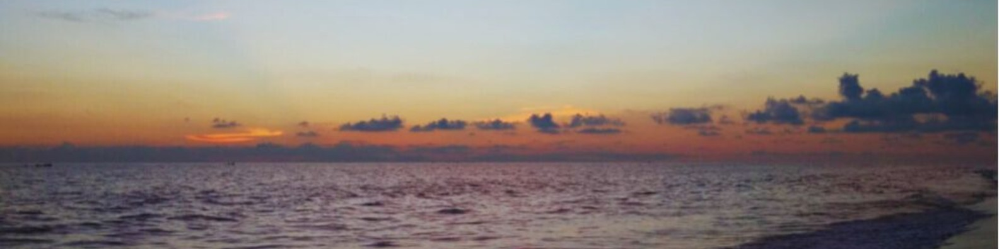

Thiruvananthapuram Zoo, one of the oldest terrarium in the country which was established as a supplemental to the Napier Museum in the year 1857 by the former Maharaja of Travancore, which was originally opened for recreational purposes, the zoo becomes a conservation center of wildlife over a period of time.
The zoo has a wide array of 35 species of animals, 28 species of birds and 17 kinds of reptiles. The zoo also houses botanical gardens with more than 200 species of trees, thousands of beautiful plants, orchids and snake farm.
The Padmanabhaswamy temple is a Hindu temple located in Thiruvananthapuram, the state capital of Kerala, India. The name of the city of Thiruvananthapuram in Malayalam translates to "The City of Lord Ananta", referring to the deity of the Padmanabhaswamy temple. The temple is built in an intricate fusion of the Chera style and the Dravidian style of architecture, featuring high walls, and a 16th-century gopura. While the Ananthapura temple in Kumbla is considered the original seat of the deity, architecturally to some extent, the temple is a replica of the Adikesava Perumal temple in Thiruvattar. The principal deity Padmanabhaswamy is enshrined in the "Anantha Shayana" posture, the eternal yogic sleep on the infinite serpent Adi Shesha. Padmanabhaswamy is the tutelary deity of the royal family of Travancore. The titular Maharaja of Travancore, Moolam Thirunal Rama Varma, is the trustee of the temple.

There are indeed number of things to do in Trivandrum,
including paying a visit to picturesque Neyyar Dam and its neighbouring wildlife sanctuary.
Built in 1958, the dam is an ideal family picnic spot which is set against the mesmerizing landscape.
It is built where rivers like Neyyar, Kallar and Mullayar confluence. The area is famed for obtaining several medicinal herbs as well.
In the vicinity of this place, a wildlife sanctuary is well laid out.
There are deer safari parks, crocodile and lion farms along with watchtower in the region.
A guided trek, safari and elephant ride is a must here.
Take out at least a day in order to get the best experience of the wild life sanctuary.